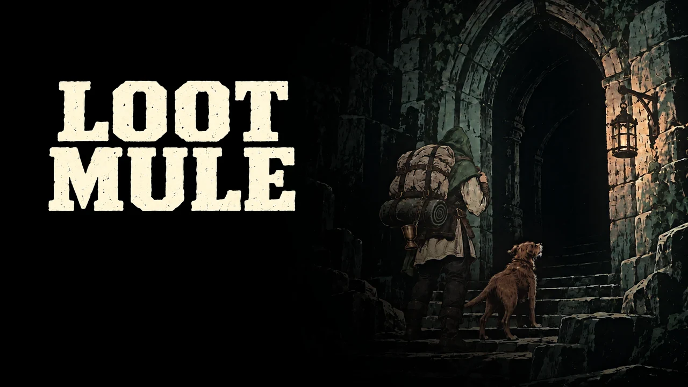
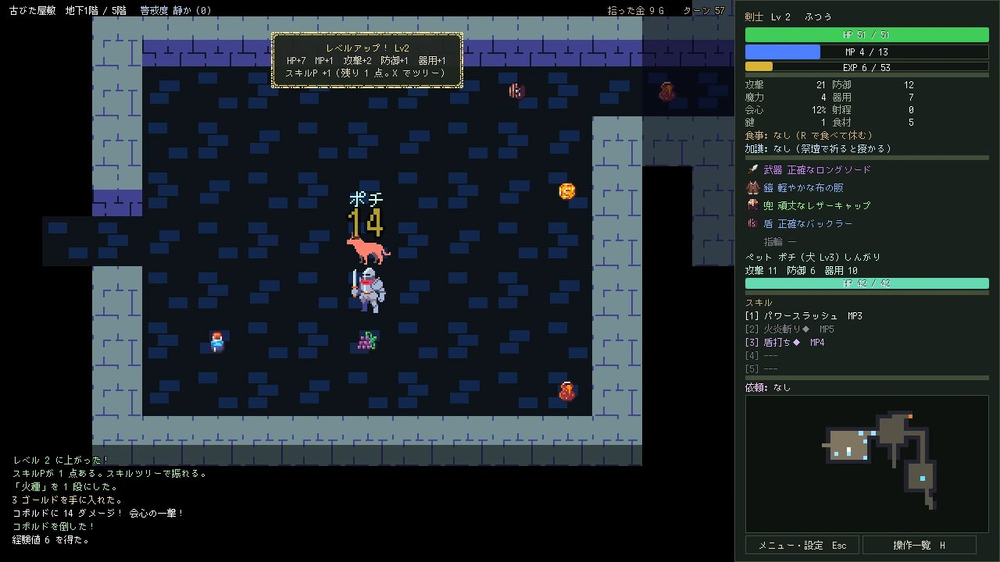
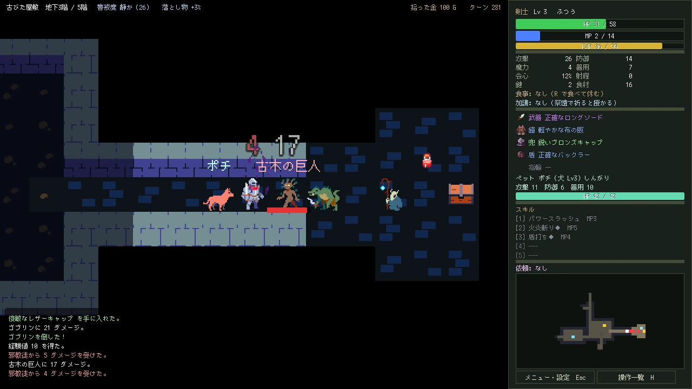
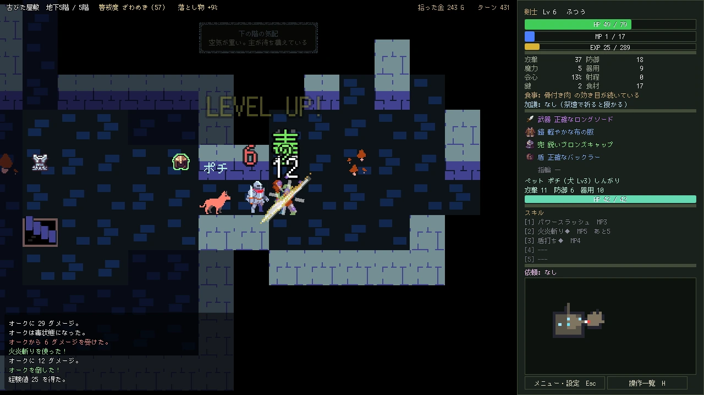
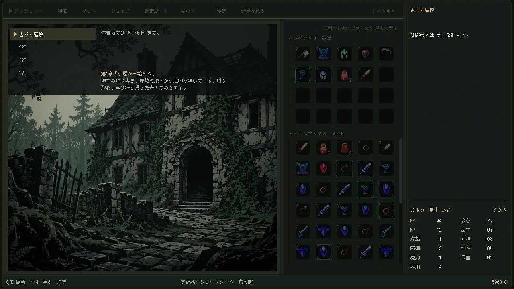
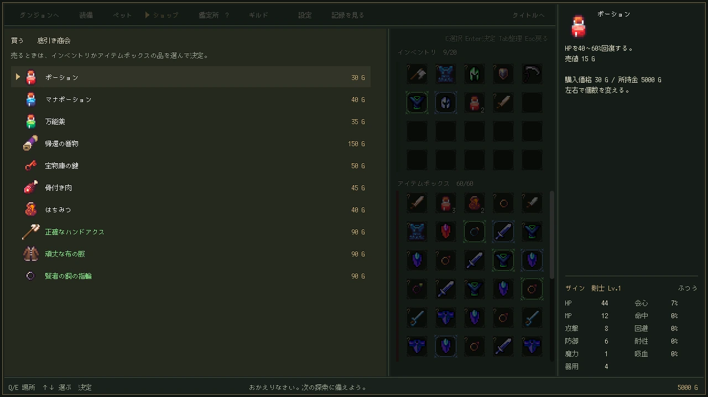

生きて帰った分だけが、 自分のものになる。
深く潜り、持てるだけ拾って、生きて拠点へ帰る。ターン制のダンジョン・ローグライトです。潜るほど・奪うほどダンジョンに気づかれ、やがて迷宮の番人が追ってきます。行きは探索、帰りは死闘。

体験版の実際のプレイ（30秒・音が出ます）
行きは探索、帰りは死闘。
拾った物は、拠点に持ち帰るまで自分の物ではありません。深く潜るほど良い物が出ますが、そのぶん帰り道は長く、追っ手は増えます。どこで引き返すかを決めるのは、あなたです。
死ねば、全部失う
持ち物も、身に着けていた装備も。残るのは拠点と倉庫、そこに置いてきた物だけです。何を持って潜るかが、いちばんの賭けどころ。
歩いて帰れば、全部持ち帰れる
入口まで戻れば、拾った物はすべて自分の物。帰還の巻物は確実ですが、身に着けている物しか持って戻れません。
毎回レベル1から組み立てる
武器ごとに違うスキル、レベルが上がるたびに伸ばすスキルツリー、祭壇で授かる加護。持ち出す武器を選ぶことが、そのままスキルを選ぶことになります。
ダンジョンで出会う仲間
ダンジョンで出会った動物が仲間になり、一緒に戦います。生きて連れて帰れば、拠点で暮らし、次の探索にもついてきます。

部屋を回って、拾えるだけ拾う
宝箱、落とし物、祭壇、罠。階を回るほど持ち物は増え、帰り道は遠くなります。

階の奥に待つ主
屋敷の途中には古木の巨人が待っています。

その探索の中だけで強くなる
レベルが上がるたびにスキルツリーへ1点。帰れば、次はまたレベル1からです。

何を持って潜るかを決める
倉庫から持ち物へ移した物だけを持って出発します。持って行けば中で使えますが、死ねば消えます。

持ち帰った物で、次に備える
売って、買って、鑑定して。拠点は探索のたびに少しずつ育ちます。
体験版は、ブラウザですぐ遊べます。
- 最初のダンジョン「古びた屋敷」をまるごと（地下5階・屋敷の主まで）
- インストール不要。パソコンのブラウザで遊べます
- キーボード・マウス・ゲームパッドに対応
- 日本語・英語
- セーブはブラウザの中に残ります（製品版には引き継ぎません）
無料
itch.io で公開中。製品版は開発中です。
itch.io で遊ぶ感想や不具合は、itch.io のコメントか、お問い合わせフォームへ。ゲームの設定にある「感想・不具合を伝える」からも開けます。